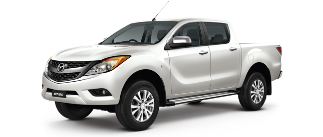

Left Stuff

From the graphs above, BT-50 is the best considered from all the option. Another one that have the same dimension and wheel width is Ford Ranger Wildtrak but BT-50 is cheaper. This pickup is used for business so cheaper one is better option.
RESULT
Mazda BT-50 Pro
Right Stuff